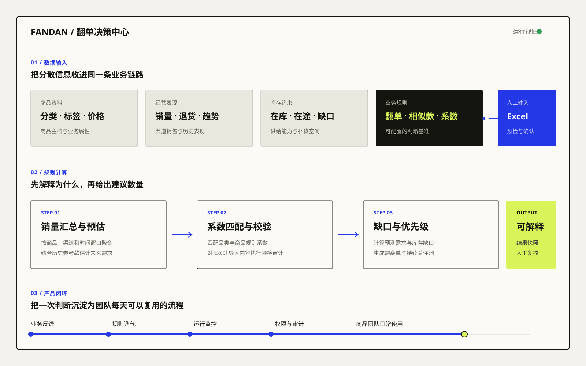

2026.08 起负责运营部与商品部 AI 落地 · 正在开放 AI 产品机会
国内电商内部 AI 产品经理，电商运营出身
把业务现场， 变成可运行的 AI 产品。
2026.08
转任 AI 专员
04
核心业务案例
87
维护中的 Agent Skills
600+
Markdown 知识资产
精选案例
从业务规则，到可交付系统

01 / 业务系统
Node.js · SQL Server
翻单决策中心
统一商品、销量、库存与翻单系数，把人工 Excel 判断变成可追溯、可迭代的补货决策流程。
查看旗舰案例
02 / 内容自动化
Coze · 模型 API
标题与种草文案 Workflow
把商品信息、平台高搜索词与小红书趋势串成一条可批量运行的内容生产线。
查看案例
03 / 视觉生成
图像模型 · 参考图
商品视觉生成与替换
用线稿、参考图和大货图控制场景、姿势与风格，降低电商视觉的试错成本。
查看案例
04 / 数据与自动化
影刀 RPA · Excel
从商品图数据到 RPA 流程
观察竞品主图色系变化，探索 AI 预测销量，把固定重复的操作交给流程。
查看案例项目成果
用成果证明，我能把 AI 做成产品
Electron · React · TypeScript
AI 代码审查 →
OpenCodeReview Desktop
把 AI 代码审查 CLI 做成 Windows 桌面工作台，覆盖工作区、分支、提交、全仓扫描与结果导出。
Flutter · Material 3
产品原型
PawCare
面向多宠、多人家庭的宠物档案与健康协作 App，完成 PRD、交互前端、Mock 状态和 805 项测试。
Agent Skills · Markdown
个人系统
AI 能力与知识基础设施
用 Skills、AGENTS 规则、来源追踪与多领域知识库，让 AI 的工作方法可复用、可检索、可治理。
工作方式
先让业务成立，
再让模型发挥。
我不把 AI 当成一个按钮，而是把它放进完整的业务闭环：识别真实阻力、定义规则、验证结果、保留人工判断，再把有效方法沉淀成系统、SOP 和团队能力。
了解我的产品方法 查看工作经历-
01
回到业务现场
先看真实的人怎么工作，判断问题是否高频、可验证、值得投入。
-
02
把需求写成规则
明确数据输入、业务逻辑、异常处理和验收标准。
-
03
做成可交付的产品
用页面、系统、Workflow 或桌面工具承接完整任务。
-
04
用反馈和培训继续迭代
记录指标与边界，通过培训和文档让团队真正持续使用。
正在开放 AI 应用产品 / 项目方向机会